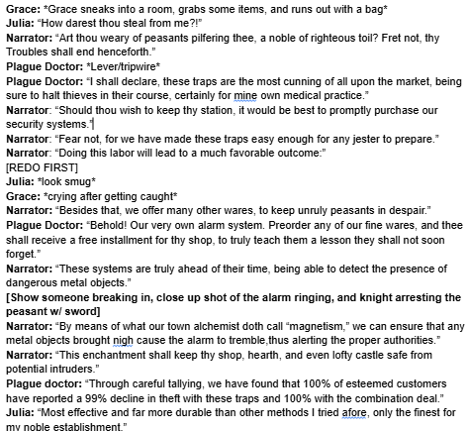

This was made for the school news. Me and three others made a funny "commercial" telling kids to make sure they eat a good breakfast before testing days.
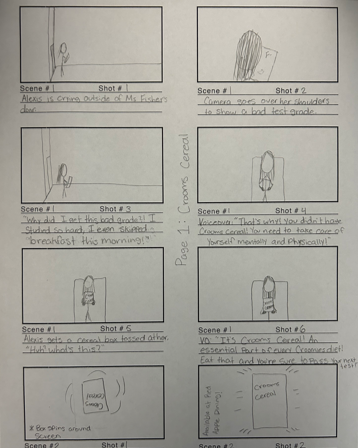
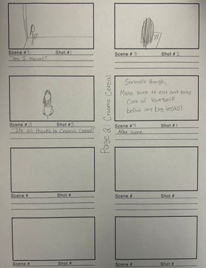
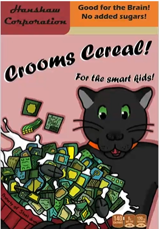
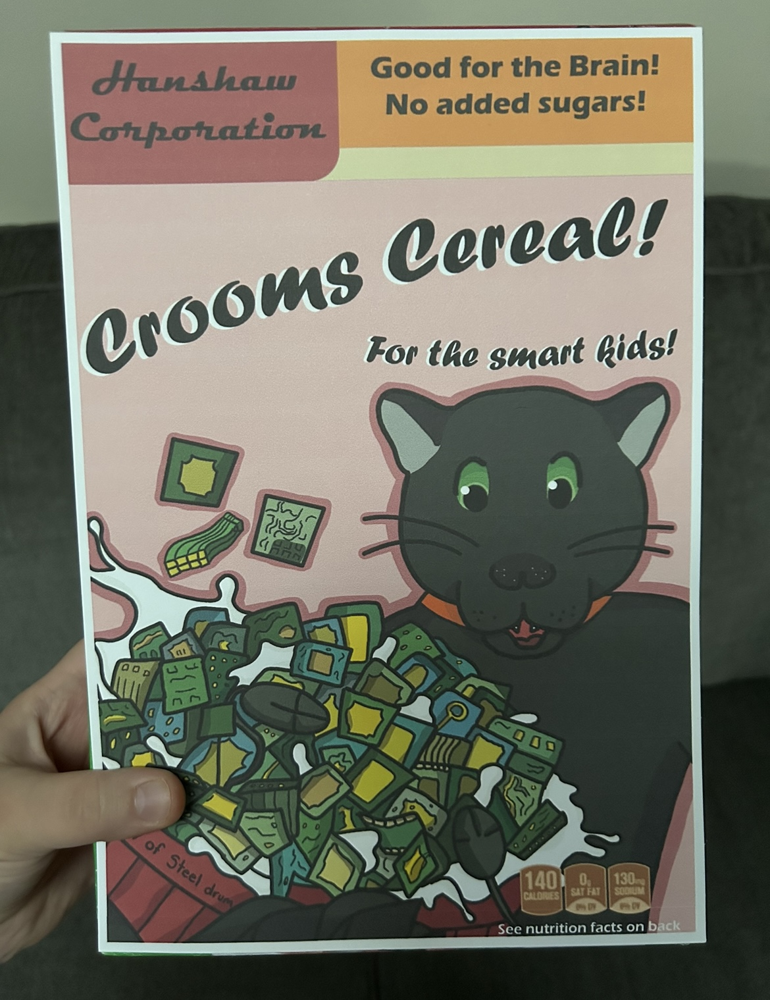
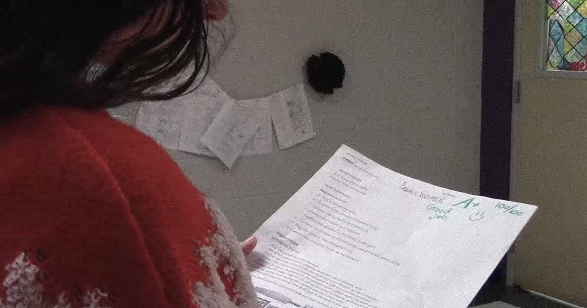
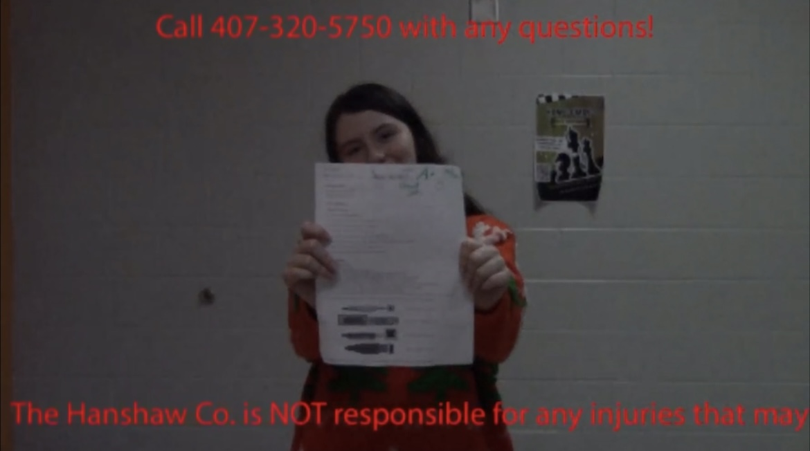
This was another commercial made for the school. This one was about reminding kids to wear their uniforms, so we decided to make it humorous by making the uniform a luxury clothing brand.
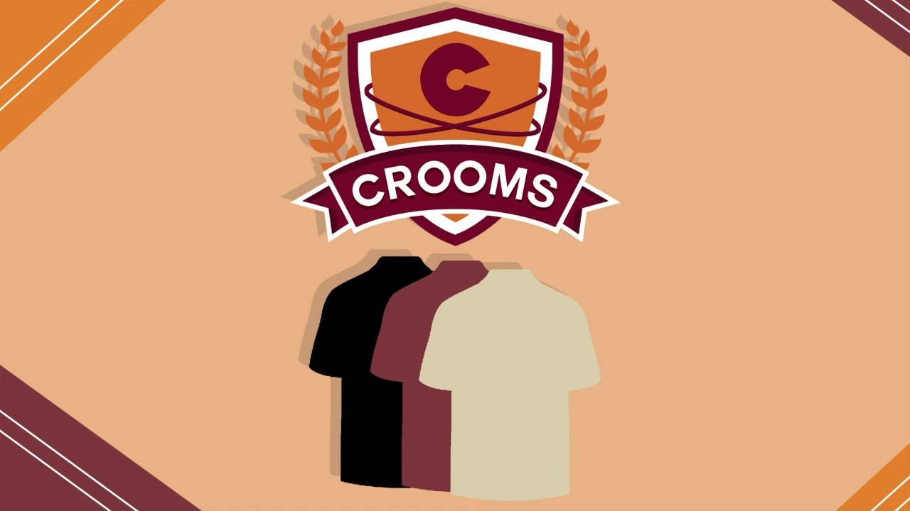
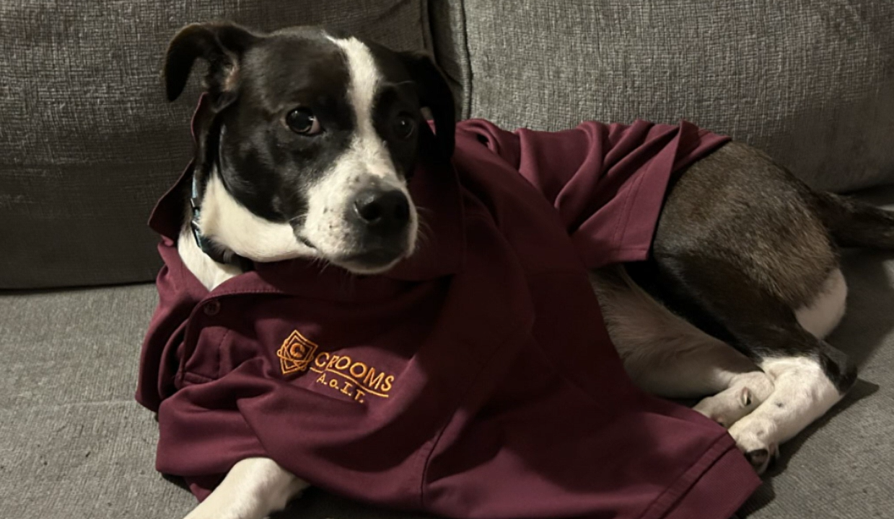
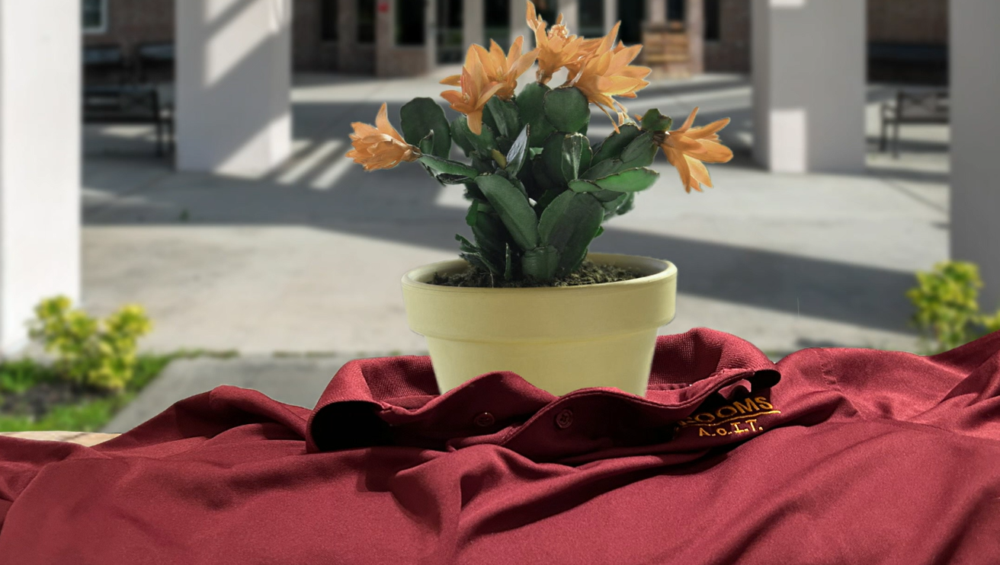
This was a project for my ELA class, where we had to write a Twilight Zone episode and choose one from our table to create. Mine got selected, so we adapted to written story into a video, making it feel as close to the real show as possible.
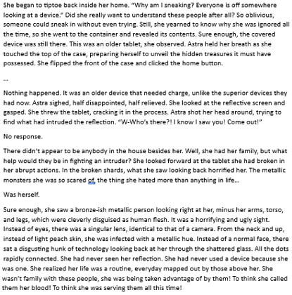
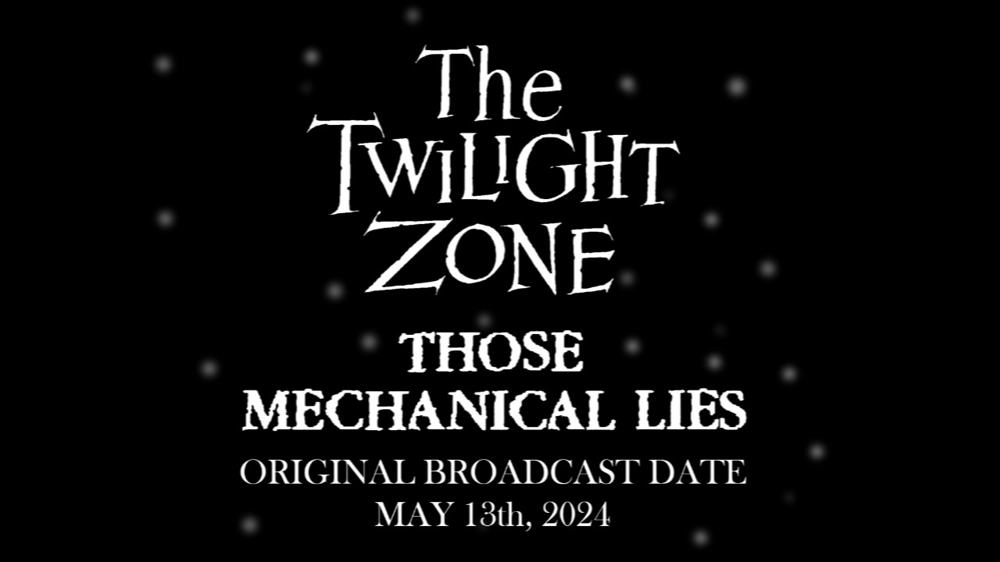
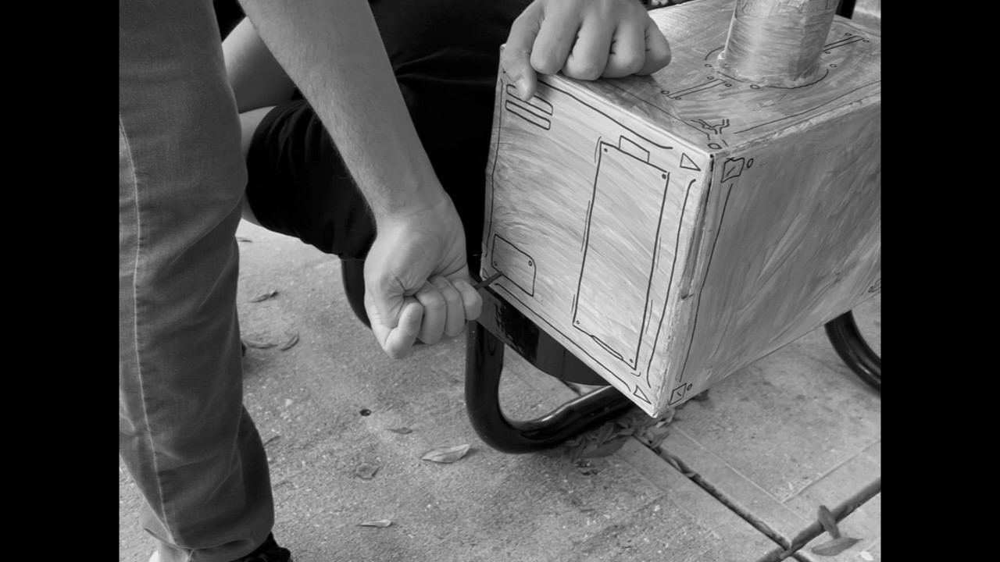
This was a project for my ENC1102 class. We had to use different rhetorical devices to make a commerical, while also keeping to a medieval theme.
